Second-year PhD seminar · Dottorato in Fisica, Università di Pisa
October 17, 2026
Gauge fields carry an integer topological charge
\[Q=\frac{1}{32\pi^2}\!\int\! d^4x\,\varepsilon_{\mu\nu\rho\sigma}\,\mathrm{Tr}\,G_{\mu\nu}G_{\rho\sigma}\;\in\mathbb{Z}\]
and all of \(\theta\)-physics sits in the free energy
\[F(\theta,T)-F(0,T)=\tfrac12\chi(T)\,\theta^2\big[1+b_2(T)\,\theta^2+\dots\big]\]
\[\chi=\frac{\langle Q^2\rangle}{V_4},\qquad b_2=-\frac{\langle Q^4\rangle-3\langle Q^2\rangle^2}{12\,\langle Q^2\rangle}\]
Non-perturbative: the lattice is the only first-principles tool.
The QCD axion needs them at high \(T\): [1]
Mass \(m_a^2 f_a^2=\chi(T)\)
Relic abundance: misalignment \(\chi(T)\) and \(b_2(T)\) over a range of temperatures
Thermal production: the source term \(\Gamma_{\rm top}(\omega,\vec p)=\displaystyle\int\! dt\,d^3x\,e^{i x_\mu p^\mu}\langle q(x)\,q(0)\rangle_T\)
All of them are needed well above \(T_c\) \(\;\Longrightarrow\;\) fine lattice spacings
At fixed \(N_\tau\), \(\;T=\dfrac{1}{N_\tau\, a}\):
high \(T\) \(\Longleftrightarrow\) \(a\to 0\)
Standard critical slowing down
\[\tau_{\rm int}(\mathcal O)\sim a^{-z}\]
Topological freezing [2]
\[\tau_{\rm int}(Q)\sim e^{\,c/a}\]
On top of that a physical suppression: \(\chi(T)\) falls steeply, the chain sits at \(Q=0\), and the rare configurations that carry the signal are never sampled.
Two fronts: what we can measure and how we can sample it
So Part II builds the samplers (hopefully) that Part I needs at high \(T\)
Part I · Topological observables
Real-time topological rate at finite momentum
How fast does the hot plasma turn topology into axions of momentum \(p\)?
arXiv:2608.12066 quenched SU(3), \(T\simeq1.24\,T_c\) Lattice 2026
with C. Bonanno, M. D’Elia, G. Gagliardi, A. Giorgieri, F. Sanfilippo, A. Valentino, G. Villadoro
Thermal axions obey a momentum-dependent Boltzmann equation [3]
\[\frac{df_{\vec p}}{dt}=(1+f_{\vec p})\,\Gamma_a^{(+)}(p)-f_{\vec p}\,\Gamma_a^{(-)}(p), \qquad \Gamma_a^{(-)}(p)=\frac{\Gamma_{\rm top}(\omega=E_p,\,p)}{2E_p f_a^2}\]
Higher momenta decouple later:
modes may equilibrate at different times \(\Rightarrow\) the integrated (sphaleron) rate \(\Gamma_{\rm top}(0,0)\) [4] is not enough.
What the lattice measures \[G_E(\tau,p)=\int\! d^3x\,e^{i\vec p\cdot\vec x}\langle q(\vec x,\tau)\,q(\vec 0,0)\rangle\]
What we need \[\Gamma_{\rm top}(\omega,p)=\frac{2}{1-e^{-\omega/T}}\,\rho(\omega,p)\]
\(\displaystyle G_E(\tau,p)=-\int_0^\infty\!\frac{d\omega}{\pi}\,\rho(\omega,p)\, \frac{\cosh\!\big[\omega(\tfrac{1}{2T}-\tau)\big]}{\sinh\!\big(\tfrac{\omega}{2T}\big)}\) \(\quad\Longrightarrow\quad\) an inverse problem
HLT [5]: never reconstruct \(\rho\) pointwise, target a smeared density
\[\frac{\bar\rho(\omega^*\!,p)}{\omega^*}=-\pi\sum_\tau g_\tau(\omega^*)\,G_E(\tau,p)=\int\! d\omega\,\Delta_\sigma(\omega,\omega^*)\,\frac{\rho(\omega,p)}{\omega}\]
\(g_\tau\) minimise
\[F_\lambda[g]=(1-\lambda)\,\underbrace{A[g]}_{\text{kernel bias}}+\lambda\,\underbrace{B[g]}_{\text{stat. variance}}\]
Scan \(\lambda\) for the stability plateau; \(\sigma/T\in[1.25,2.5]\), quoted at 1.75.
Three limits, in order
\(N_\tau=12,14,16\) at \(LT=4\) \(\Rightarrow\) \(p/T\) up to \(3\pi\)
Method 1 · extrapolate, then invert
\(G_E(\tau,p;a,R_s)\) → \(a\to0\), then \(R_s\to0\) → HLT → \(\Gamma_{\rm top}(\omega,p)\)
Method 2 · invert, then extrapolate the rate
\(G_E(\tau,p;a,R_s)\) → HLT → \(a\to0\), then \(R_s\to0\) → \(\Gamma_{\rm top}(\omega,p)\)
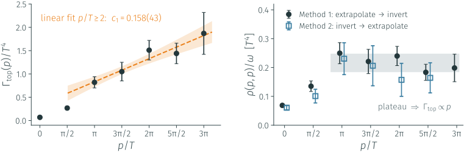
Linear growth for \(p/T\geq2\), as semiclassics predicts [6]
\(\Gamma_{\rm top}\propto p\,(\alpha_sT)^3\big[A\log\frac{pT}{m_D^2}+B\big]\), already at \(1.24\,T_c\)
The two orderings of the limits agree at every momentum.
\(G_E\) is suppressed with \(p\), but on shell the growth with \(\omega\) wins.
Part I · Topological observables
\(b_2\) across the chiral crossover
Where does QCD start behaving like a dilute gas of instantons?
\(N_f=2+1\) QCD \(T=130\)–\(200\) MeV Nicolò Francesconi’s MSc thesis
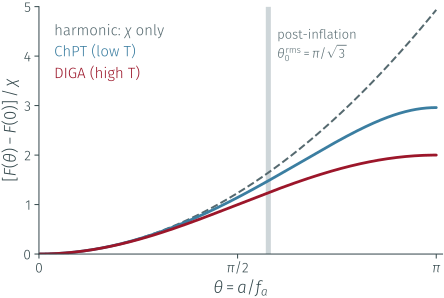
The axion potential is the QCD free energy:
\[V(a)=\tfrac12\,m_a^2\,a^2\Big[1+b_2\,\frac{a^2}{f_a^2}+\dots\Big],\qquad m_a^2f_a^2=\chi\]
\(b_2\) is the axion self-coupling \(\lambda_a=12\,b_2\,m_a^2/f_a^2\): at \(T=0\), \(b_2=-0.029\) gives \(\lambda_a\simeq-0.35\,m_a^2/f_a^2\), an attractive self-interaction [1].
Misalignment does not start at small angles Post-inflation, \(\theta_0^{\rm rms}=\pi/\sqrt3\); pre-inflation, the smallest \(f_a\) needs \(\theta_0\to\pi\). There the harmonic approximation fails, and the anharmonic terms are set by \(b_2(T)\) around \(T_{\rm osc}\).
\(\chi(T)\) fixes the curvature of the potential; \(b_2(T)\) fixes its shape
Low temperatures · chiral perturbation theory \[b_2(0)\simeq-0.029\] Predicted by the light-quark mass ratios.
High temperatures · dilute instanton gas approximation \[b_2^{\mathrm{DIGA}}=-\frac{1}{12},\qquad b_4^{\mathrm{DIGA}}=\frac{1}{360}\] Characteristic values of the DIGA regime.
Pure Yang–Mills vs. QCD
The temperature dependence of \(b_2\) provides a diagnostic of the approach to the DIGA regime. Establishing the onset of DIGA is important for assessing the reliability of high-temperature extrapolations of \(\chi(T)\), a key input for QCD axion cosmology.
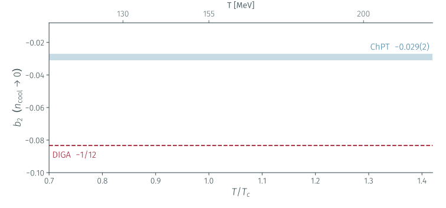
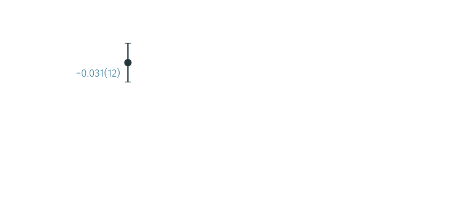
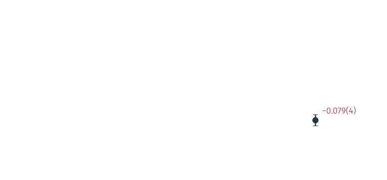
\(T=130\) MeV: \(-0.031(12)\), on the ChPT value
\(T=200\) MeV: \(-0.079(4)\), on the DIGA value
The whole ChPT → DIGA transition, resolved for the first time in \(N_f=2+1\) QCD.
How QCD gets from one end to the other: Nicolò’s MSc defence, next week.
Part I · Topological observables
Lines of constant physics at high temperature
Higher \(T\) means finer \(a\):
charm is dynamical (\(N_f=2+1+1\)), and the \(T=0\) route costs \(\propto a^{-4}\).
gradient-flow step scaling bare parameters fermion flow
Evolve the links \(V_\mu(x,t)\), from \(V_\mu(x,0)=U_\mu(x)\), in a fictitious flow time \(t\) [21]:
\[\partial_t V_\mu(x,t)=-g_0^2\,\big\{\partial_{x,\mu}S_W[V]\big\}\,V_\mu(x,t)\]
UV fluctuations are averaged over a radius \(\sqrt{8t}\); flowed gluonic observables are finite, with no further renormalisation:
\[g^2_{\rm flow}(\mu)=\frac{16\pi^2}{3}\,t^2\langle E(t)\rangle\Big|_{\mu=1/\sqrt{8t}}\]
The step-scaling procedure
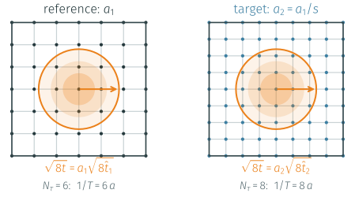
One physical flow radius, more sites on the finer lattice: \(\hat t_2/\hat t_1=s^2\)
Same \(g^2_{\rm flow}\) \(\Rightarrow\) same physical flow time on both lattices [7]: \(\quad t=a_1^2\hat t_1=a_2^2\hat t_2\;\Longrightarrow\; s\equiv\dfrac{a_1}{a_2}=\sqrt{\hat t_2/\hat t_1}\)
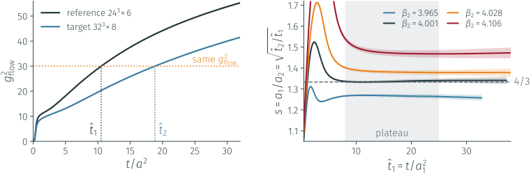
Purely gluonic and local: it works at finite \(T\).
A flat plateau in \(1\ll\hat t\ll N_\tau^2\), moving monotonically with \(\beta_2\): scan and interpolate to the target \(s\).
| theory | step | \(T\) [MeV] | \(\beta_2^\star\) |
|---|---|---|---|
| \(2+1\) (check) | \(24^3\!\times\!6\to32^3\!\times\!8\) | 498 | 4.121 |
| \(2+1+1\) | \(24^3\!\times\!6\to32^3\!\times\!8\) | 498 | 4.004 |
| \(2+1+1\) | \(24^3\!\times\!8\to36^3\!\times\!12\) | 374 | 4.040 |
Agrees with the BMW scale setting [8] at the per-mille level
Why not the time direction? At finite \(T\) it is only \(1/T=N_\tau a\) long: \(N_\tau/2=3\)–\(4\) independent points, far too few to isolate a ground state.
Use a long spatial direction \(L=N_sa\) with \(LT=4\): \[\;C(z)=\sum_{x,y,\tau}\langle O(x,y,z,\tau)\,O^\dagger(0)\rangle\sim e^{-m_{\rm scr}z}\]
\(m_{\rm scr}\) is an eigenvalue of the transfer matrix along \(z\): the inverse correlation length of the plasma in that channel.
Not a pole mass: the bath breaks Lorentz symmetry.
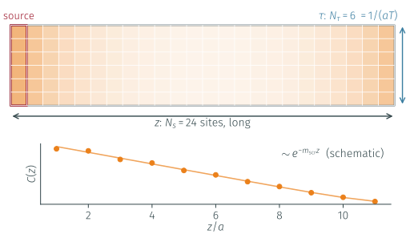
The matching
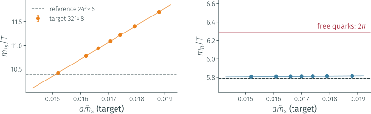
At high \(T\) every quark carries at least \(\pi T\) \(m_{\rm scr}\to 2\pi T+\mathcal O(m^2/T)\) [9]: the dependence on the bare mass is washed out.
Already at \(T\simeq 500\) MeV \(\bar ss\) still tunes; the pion sits 7–8 % below \(2\pi\).
Towards 1 GeV even \(s\) and \(c\) saturate.
We need a short-distance fermionic observable, decoupled from the thermal bath
Flow the quark fields too (Lüscher [10]) to \(\sqrt{8t}=c\,L\) and take
\[z_f=\mathcal N_m^{-1}\,\frac{L}{t}\, \frac{\langle\bar\chi_f\chi_f\rangle_t}{\langle\bar\chi_f\gamma_\mu\overleftrightarrow{D}_{\!\mu}\chi_f\rangle_t} \;=\;L\,m_f^{\rm R}(\mu\sim 1/L)\]
New fermion_flow_meas implemented in OpenStaPLE (GPU, OpenACC).
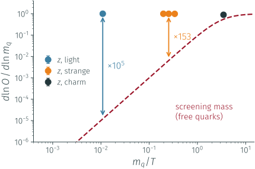
Better Sensitivity than Screening masses: \(1\%\) of \(m\) moves \(z\) by \(1\%\)
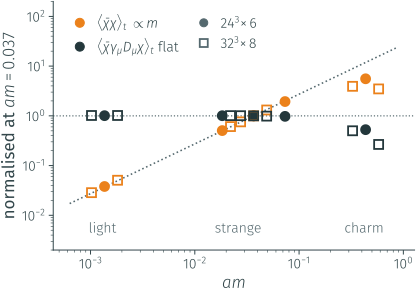
Numerator \(\propto m\) for a large range of masses, denominator flat.
\(z(m\to0)=0.0001(1)\) on \(32^3\!\times\!8\): no additive renormalisation
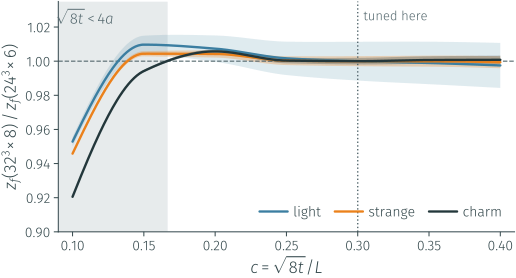
Masses tuned at \(c=0.3\) only: the whole \(z(c)\) agrees between the two spacings within \(0.5\%\) once \(\sqrt{8t}\gtrsim4a\). The flow removes the cutoff.
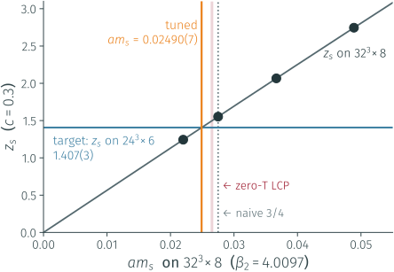
| \(am^{\rm tuned}(\beta_2)\) | \(am(\beta_2)/am(\beta_1)\) | |
|---|---|---|
| light | 0.000934(11) | 0.685(8) |
| strange | 0.02490(7) | 0.679(2) |
| charm | 0.2973(6) | 0.684(1) |
Open “Problem”: The overall scale sits 6–7 % below the zero-\(T\) LCP, far beyond the errors:
Part II · Algorithmic challenges
Sampling topology with normalizing flows
Can a learned map jump over the barrier, instead of climbing it?
2D \(U(1)\) gauge theory exactly solvable testbed vs HMC
Toy Model \(p_\beta\propto e^{-S_\beta}\):
\[q(x)=q_0(z)\,\big|\det\partial f_\theta/\partial z\big|^{-1}\]
Learned from the action alone 8 spline coupling layers, each moving one coordinate given the other (cheap Jacobian). Trained in 5 s by minimising \(\mathrm{KL}(q\|p)\) with \(\beta\) annealed from 0 to 7.
Never trusted \(w=p/q\) is known for every sample: ESS \(=84\%\). The flow under-fills \(Q=\pm2\) by up to \(2\times\) (hollow bars); reweighting or Metropolis restores the exact \(P(Q)\).
Independent proposals beat freezing Flow beats Local Metropolis by 4 orders of magnitude in \(\tau_{\rm int}(Q)\) at \(\beta=7\).
Testbed: 2D \(U(1)\), \(\pi_1(U(1))=\mathbb Z\), freezes like QCD and is exactly solvable;
the flow reproduces the free energy to 5 digits (\(-F=568.424(48)\) vs \(568.422\) at \(\beta=7\)).
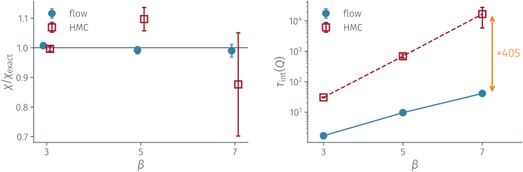
\(L=24\): \(\chi\) within \(1\%\) at every \(\beta\), with an error 8× smaller
from 7× fewer samples (131k flow proposals vs 950k HMC trajectories)
\(\tau_{\rm int}(Q)\): HMC grows \(\times500\) over the range, the flow \(\times24\)
→ a factor ~400 at \(\beta=7\)
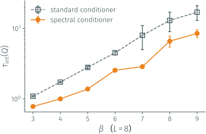
At large \(\beta\) the information moves to the infrared: let the conditioner see a low-pass copy of the field
\[F_{\rm LP}(k)=\frac{1}{1+2^{\,k-|k_c|}},\qquad k_c\ \text{trainable}\]
The measure is untouched The filter acts on a copy fed only to the conditioner: \(\log\det J\) is unchanged.
\(\tau_{\rm int}(Q)\) halved, uniformly in \(\beta\)
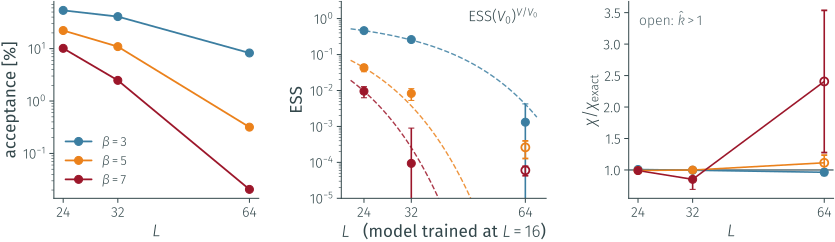
One model, evaluated at \(L=24\to64\): acceptance \(10\%\to0.02\%\) at \(\beta=7\), \(\chi\) off by \(\times2.4\).
Freezing reappears inside the flow.
\(\mathrm{ESS}(V)=\mathrm{ESS}(V_0)^{V/V_0}\) [13]: \(V/V_0\) independent regions, a small imperfection in each, compounded.
No single map can be trained across the whole distance on a physical lattice \(\;\Rightarrow\;\) take many small steps
Part II · Algorithmic challenges
Optimal annealing paths through distribution space
If we have to take many small steps, where should they go?
Fisher information geometry learned coupling fields \(CP^{N-1}\) arxiv:2610.XXXX
with E. Cellini, G. Kanwar, S. Widyanto
\(S_\lambda=(1-\lambda)\,S_{\rm open}+\lambda\,S_{\rm periodic}\), traversed in sequence (stochastic NFs [14]) or in parallel (PT)
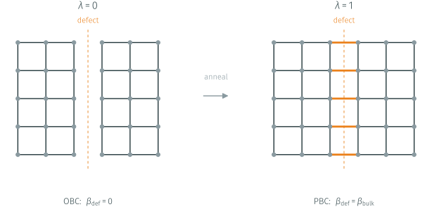
A defect of links with coupling \(\lambda\,\beta\):
open at \(\lambda=0\) (\(Q\) free), periodic at \(\lambda=1\) [15]
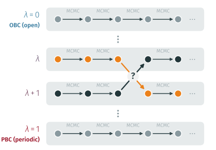
Swap neighbours with \(A=\min\!\Big(1,\frac{p_{\lambda_r}(x_{r+1})\,p_{\lambda_{r+1}}(x_r)}{p_{\lambda_r}(x_r)\,p_{\lambda_{r+1}}(x_{r+1})}\Big)\);
measure on the periodic replica only: exact, and already in production in full 2+1 QCD [16]
The free parameter nobody optimises: the schedule \(0=\lambda_0<\lambda_1<\dots<\lambda_N=1\)
The Fisher metric on the family, measurable as a variance:
\[g(\lambda)=\mathbb E_{p_\lambda}\!\big[(\partial_\lambda\log p_\lambda)^2\big]=\mathrm{Var}_{p_\lambda}\!\big[\partial_\lambda S_\lambda\big]\]
\(D_{\rm KL}(p_\lambda\|p_{\lambda+d\lambda})\simeq\tfrac12 g\,d\lambda^2\): large \(g\) = hard to bridge.
Thermodynamic length [17] and dissipation
\[\Lambda=\int_0^1\!\sqrt{g}\,d\lambda=\sum_k\Delta\ell_k,\qquad W_{\rm diss}\propto\sum_k\Delta\ell_k^2\]
geodesic: \(\;\Delta\ell_k=\Lambda/N\;\Longleftrightarrow\;\dfrac{d\lambda}{dt}\propto\dfrac{1}{\sqrt{g(\lambda)}}\)
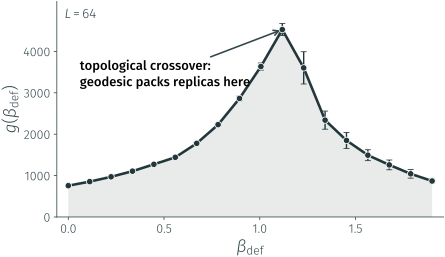
\(g\) peaks at the topological crossover:
that is where the replicas must go.
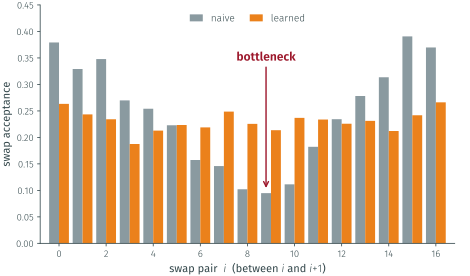
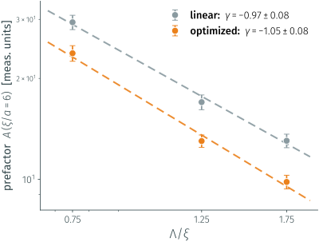
\(\tau_{\rm int}(Q^2)\sim A\,(\xi/a)^z\): a power law,
and −20 % on \(A\), at no extra cost
Part II · Algorithmic challenges
Out-of-equilibrium replica exchange
We chose where the replicas sit.
Can the swap itself be made better?
O-REX exact for any protocol \(CP^{20}\) no neural network (yet) arxiv:2610.XXXX
\(n_{\rm step}\) jumps with local relaxation in between [18]. The action is linear in the defect coupling, \(S=S_{\rm bulk}+C\,E_{\rm def}\), so
\[W=\sum_k\Big[\Delta C_r^{(k)}E_{\rm def}(x_r^{(k)})+\Delta C_s^{(k)}E_{\rm def}(x_s^{(k)})\Big]\]
accept with \(\min(1,e^{-W})\) and \(n_{\rm step}=0\) is the standard swap.
Exact for any \(n_{\rm step}\) Same ensembles at both ends: Jarzynski [19] gives \(\langle e^{-W}\rangle=1\), and \(\langle W\rangle\) is the dissipation, i.e. a KL divergence: the flows’ loss.
Made it cheap In theory we should relax the full lattice between jumps; in practice we can relax only a patch of half-size \(L_R\) around the defect; the figure of merit is \(\tau_{\rm int}(Q^2)\times\text{cost}\).
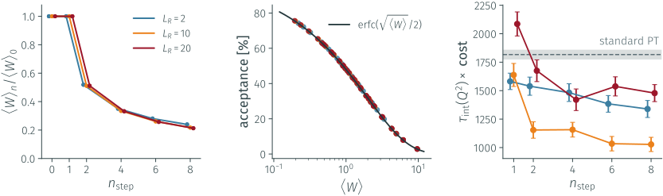
Dissipation cut 5× at \(n_{\rm step}=8\), independent of \(N_R\): \(\langle W\rangle_8/\langle W\rangle_0=0.217\)
All 126 runs on the parameter-free law \({\rm erfc}(\sqrt{\langle W\rangle}/2)\), within 0.6 points
\(1817\to1028\): gain 1.77(12) at \(L_R=10\);
the best patch is \(\sim2\xi\)
Topological observables
Algorithmic challenges
Topological rate at finite \(p\) first lattice determination at \(p\neq0\): \(\Gamma_{\rm top}\propto p\) up to \(p/T\simeq3\pi\), two orderings agree
Normalizing flows \(\tau_{\rm int}(Q)\) ~400× below HMC at \(\beta=7\); spectral conditioner another 2×; ESS wall in \(V\)
\(b_2\) across the crossover first determination in \(N_f=2+1\): from ChPT at 130 MeV to DIGA at 200 MeV (N. Francesconi’s MSc)
Optimal annealing paths Fisher geodesic learned from samples: bottleneck removed, −20 % on the prefactor
Lines of constant physics step scaling: per-mille agreement with BMW; fermion flow: masses to 0.3 % (WIP)
Out-of-equilibrium exchange exact, controlled by the same thermodynamic length: 1.77(12)× at equal cost
1 \(\Gamma_{\rm top}(p)\) in full QCD
2 The LCP, closed
3 NEO-REX
enhanced sampler → ensembles on the \(N_f=2+1+1\) LCP → \(\chi,\ b_2,\ \Gamma_{\rm top}(p)\) at high \(T\)
[1] Grilli di Cortona, Hardy, Pardo Vega, Villadoro, JHEP 01 (2016) 034
[2] Del Debbio, Manca, Vicari, PLB 594 (2004) 315; Schaefer, Sommer, Virotta, NPB 845 (2011) 93
[3] Notari, Rompineve, Villadoro, PRL 131 (2023) 011004 [arXiv:2211.03799]
[4] Bonanno, D’Angelo, D’Elia, Maio, Naviglio, PRD 108 (2023) 074515; PRL 132 (2024) 051903
[5] Hansen, Lupo, Tantalo, PRD 99 (2019) 094508 [arXiv:1903.06476]
[6] Graf, Steffen, PRD 83 (2011) 075011; Salvio, Strumia, Xue, JCAP 01 (2014) 011
[7] Junnarkar, Moore, Chaumet, PRD 108 (2023) 074512
[8] Borsanyi et al., JHEP 09 (2012) 010; PRL 125 (2020) 052001; Bellwied et al., PRD 92 (2015) 114505
[9] Dalla Brida, Giusti, Harris, Laudicina, Pepe, JHEP 04 (2022) 034 [arXiv:2112.05427]
[10] Lüscher, JHEP 04 (2013) 123 [arXiv:1302.5246]
[11] Lüscher, Commun. Math. Phys. 293 (2010) 899
[12] Albergo, Kanwar, Shanahan, PRD 100 (2019) 034515; Kanwar et al., PRL 125 (2020) 121601
[13] Abbott et al., EPJA 59 (2023) 257 [arXiv:2211.07541]
[14] Caselle, Cellini, Nada, Panero, JHEP 07 (2022) 015 [arXiv:2201.08862]
[15] Hasenbusch, PRD 96 (2017) 054504; Berni, Bonanno, D’Elia, PRD 100 (2019) 114509
[16] Bonanno, Clemente, D’Elia, Maio, Parente, JHEP 08 (2024) 236; Bonanno et al., EPJC 84 (2024) 916
[17] Crooks, PRL 99 (2007) 100602; Sivak, Crooks, PRL 108 (2012) 190602
[18] Ballard, Jarzynski, PNAS 106 (2009) 12224; Bonanno, Nada, Vadacchino, JHEP 04 (2024) 126
[19] Jarzynski, PRL 78 (1997) 2690
[20] Bonati, D’Elia, Panagopoulos, Vicari, PRL 110 (2013) 252003
[21] Lüscher, JHEP 08 (2010) 071 [arXiv:1006.4518]
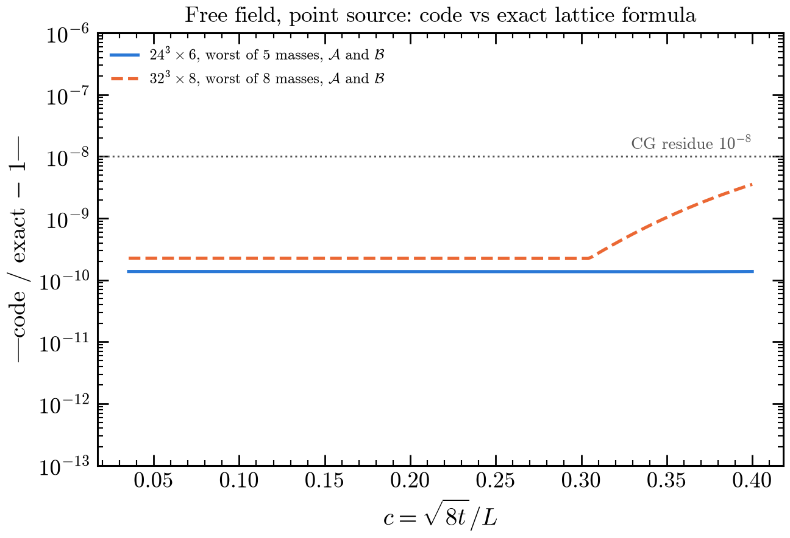
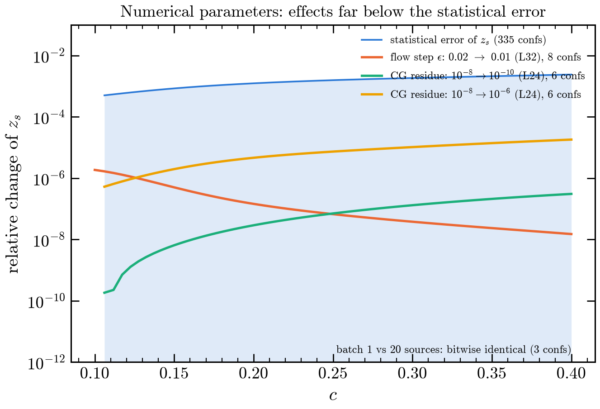
Free field: exact finite-box formula to \(10^{-10}\) (\(24^3\)) and \(4\cdot10^{-9}\) (\(32^3\)). Flow step \(0.02\to0.01\): \(\le 2\cdot10^{-6}\); CG residue \(10^{-8}\to10^{-10}\): \(\le3\cdot10^{-7}\); batching: bitwise identical.
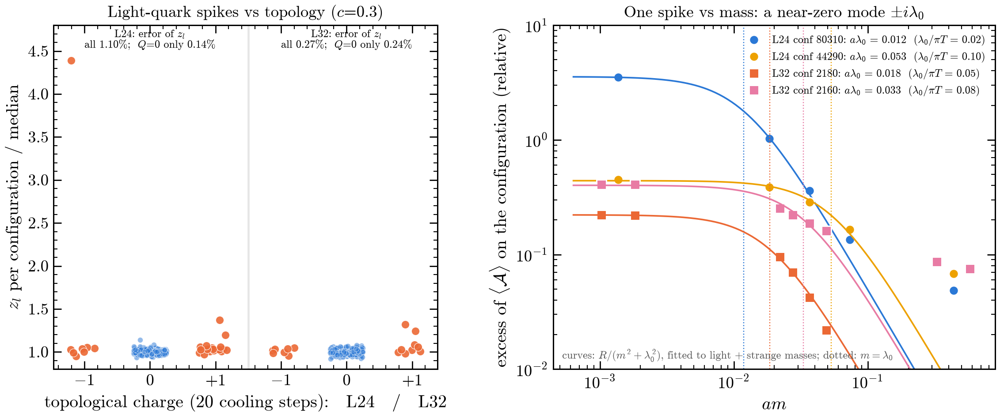
Spikes are \(|Q|=1\) configurations with one near-zero Dirac mode (\(a\lambda_0=0.012\)–\(0.053\), fitted from the mass dependence of \(z\)). In the \(Q=0\) sector the light error drops from \(1.10\%\) to \(0.14\%\) on \(24^3\times6\). Tune with strange: one factor for all flavours.
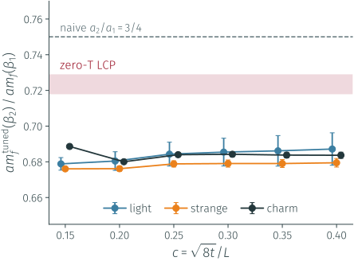
The tuned ratio \(am(\beta_2)/am(\beta_1)\) is flat in \(c\in[0.15,0.40]\) and the same for \(l,s,c\); the zero-\(T\) LCP sits 6–7 % higher, the naive \(3/4\) higher still.
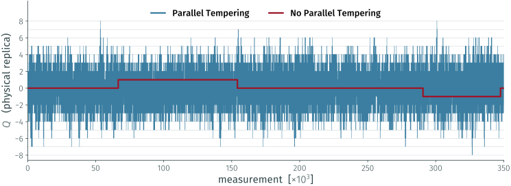
\(CP^{20}\), \(L=150\), \(N_R=12\), optimised schedule, ~350k measurements: the periodic replica visits \(Q=-8\dots+8\).
R. Dionisio · Topological observables and the sampling problem